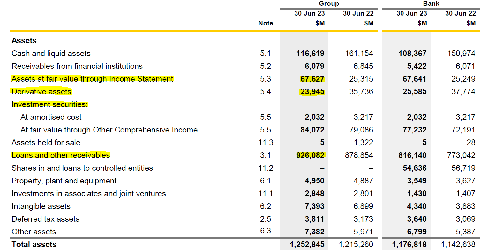
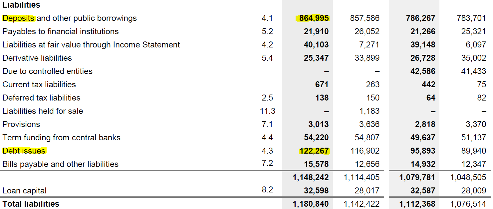
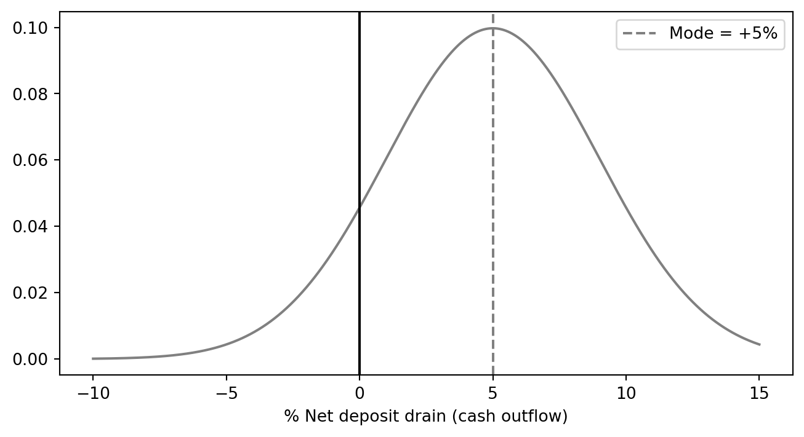
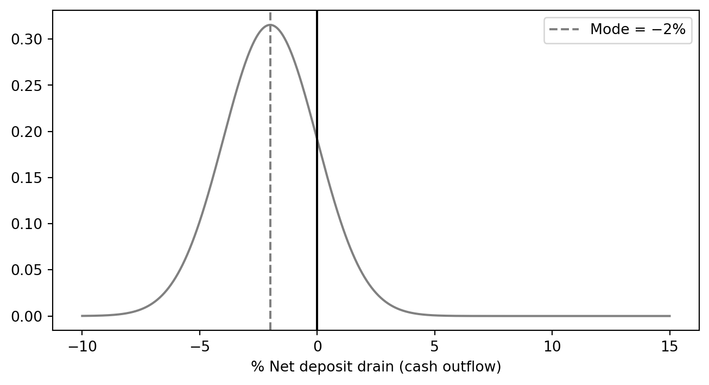

Banking and Financial Intermediation
Department of Applied Finance
2026-04-28
Two bank deaths in 10 days — March 2023
| Silicon Valley Bank | Credit Suisse | |
|---|---|---|
| Run size | $42bn / day (≈25% of deposits) | CHF 110bn in days |
| Time to failure | 36 hours | One week |
| Trigger | $1.8bn AFS loss disclosure | Loss of confidence |
| Outcome | FDIC seizure | UBS takeover for CHF 3bn |
| Solvent on paper? | Yes | Yes |
Both banks died of thirst, not insolvency. A bank’s funding model is as much a risk as its loan book.
| Liability side | Asset side | |
|---|---|---|
| Trigger | Depositors / wholesale funders demand cash | Borrowers draw committed lines; investment portfolio loses value |
| Symptom | Net deposit drain | Forced asset sales |
| Cost | New funding at higher rates | Fire-sale loss on long-duration assets |
| Key concept | Distribution of net deposit drains; core deposits | Loan commitments; HQLA haircuts |
| March 2023 example | $42bn SVB run in one day | $1.8bn SVB AFS loss |
We focus on DIs — the institutions most exposed because they fund long-term assets with short-term, on-demand liabilities.
Scale of the maturity mismatch
For U.S. commercial banks, deposits typically make up 70–80% of total liabilities and capital, while cash assets are a small single-digit-to-low-teens share of total assets. The maturity mismatch is the business model — and the source of the risk.
For CBA (FY2023), cash and liquid assets accounted for only 9.3% of total assets — the rest is largely loans and long-dated securities.

Figure 1: Excerpt of CBA’s FY2023 balance sheet — assets. Source: Commonwealth Bank of Australia 2023 Annual Report.
On the other side, CBA (FY2023) funded 73.25% of total liabilities with deposits and other public borrowings — most of it short-dated and on demand.

Figure 2: Excerpt of CBA’s FY2023 balance sheet — liabilities. Source: Commonwealth Bank of Australia 2023 Annual Report.
It’s not that bad.
Most demand deposits are relatively “stable”, acting as consumer core deposits on a daily basis.
The DI manager must monitor and predict the net deposit drains on any given normal banking day.
DI managers monitor the distribution of net deposit drains — the daily difference between withdrawals and inflows. Two stylised cases:
import matplotlib.pyplot as plt
import numpy as np
x = np.linspace(-10, 15, 1000)
y = np.exp(-0.5 * ((x - 5) / 4)**2) / (4 * np.sqrt(2 * np.pi))
plt.figure(figsize=(8, 4))
plt.plot(x, y, color='gray')
plt.axvline(x=0, color='black', linestyle='-')
plt.axvline(x=5, color='gray', linestyle='--', label='Mode = +5%')
plt.xlabel("% Net deposit drain (cash outflow)")
plt.legend()
plt.show()
Mode at +5% ⇒ withdrawals routinely exceed inflows ⇒ liability side contracting.
import matplotlib.pyplot as plt
import numpy as np
x = np.linspace(-10, 15, 1000)
y = np.exp(-0.5 * ((x + 2) / 2 )**2) / (4 * np.sqrt(2 * 0.1 * np.pi))
plt.figure(figsize=(8, 4))
plt.plot(x, y, color='gray')
plt.axvline(x=0, color='black', linestyle='-')
plt.axvline(x=-2, color='gray', linestyle='--', label='Mode = −2%')
plt.xlabel("% Net deposit drain (cash outflow)")
plt.legend()
plt.show()
Mode at −2% ⇒ inflows exceed withdrawals ⇒ balance sheet expanding.
When a positive drain materialises, the DI plugs it via either purchased liquidity (wholesale borrowing) or stored liquidity (run down cash / HQLA). Traditionally DIs leaned on stored liquidity; today most rely on purchased liquidity — examined next.
A $5 deposit drain (deposits 70 → 65). Two ways to plug it:
(A) Purchased liquidity — borrow in wholesale markets (interbank, repo, CDs, notes/bonds).
| Before | After drain | After fix | |
|---|---|---|---|
| Assets | 100 | 100 | 100 |
| Deposits | 70 | 65 | 65 |
| Borrowed | 10 | 10 | 15 |
| Other liab. | 20 | 20 | 20 |
| Total | 100 | 95 | 100 |
✓ Balance sheet size preserved. ✗ Wholesale funding is costlier and flightier than deposits.
(B) Stored liquidity — run down cash and HQLA buffers.
| Before | After drain & fix | |
|---|---|---|
| Cash | 9 | 4 |
| Other assets | 91 | 91 |
| Deposits | 70 | 65 |
| Borrowed | 10 | 10 |
| Other liab. | 20 | 20 |
| Total | 100 | 95 |
✓ No new (expensive) funding. ✗ Balance sheet contracts; foregone return on the cash buffer.
Reserve requirements have largely faded
The U.S. Fed cut all reserve requirements to zero on 26 March 2020 and has not reinstated them; the RBA has never imposed a formal reserve ratio. Today, “stored liquidity” mostly means HQLA under the LCR, not regulatory cash reserves.
So far we have focused on liability-side drains. The asset side generates liquidity demand through two channels:
1. Loan-commitment drawdowns
Borrowers exercise pre-existing committed credit lines — the bank must fund the loan today, even though it priced the commitment yesterday.
COVID-19 dash for cash
In March 2020, U.S. corporates drew on credit lines at unprecedented speed. Acharya et al. (2024) link this drawdown channel directly to bank-stock underperformance during the pandemic.
2. Investment-portfolio losses
Rising rates → MTM losses on bond holdings. If the bank must sell to fund withdrawals, paper losses become realised losses, eating into equity.
SVB, March 2023
SVB sold its available-for-sale portfolio at an $1.8bn after-tax loss to raise cash for outflows. The disclosure itself triggered the run that killed the bank within 36 hours.
The mechanics of plugging an asset-side need (a $5 drawdown or $5 MTM hit) are the same as on the liability side: either purchase liquidity (more borrowing) or store liquidity (run down cash). The cost trade-offs are identical to the previous slide.
Loan-commitment exercise ($5 drawn)
| Before | Stored | Purchased | |
|---|---|---|---|
| Cash | 12 | 7 | 12 |
| Other assets | 138 | 143 | 143 |
| Deposits | 100 | 100 | 100 |
| Borrowed | 20 | 20 | 25 |
| Equity | 25 | 25 | 25 |
| Total | 150 | 150 | 155 |
Investment-portfolio MTM loss ($5)
| Before | Stored | Purchased | |
|---|---|---|---|
| Cash | 12 | 7 | 12 |
| Inv. port. | 50 | 50 | 50 |
| Other assets | 88 | 88 | 88 |
| Deposits | 100 | 100 | 105 |
| Borrowed | 20 | 20 | 20 |
| Equity | 20 | 20 | 20 |
| Total | 150 | 145 | 150 |
In both cases the stored route shrinks the balance sheet, and the purchased route preserves size at the cost of more wholesale funding.
Liquidity-risk measurement has evolved through three layers. The first two (gap analysis, peer ratios) remain useful internal management tools; the Basel III LCR and NSFR are the binding regulatory standards.
| Layer | Measure | Question it answers | Status today |
|---|---|---|---|
| 1. Structural gap | Financing gap & financing requirement | How much wholesale funding do I need to plug the loan/deposit mismatch? | Internal ALM tool |
| 2. Peer benchmarking | Loan-to-deposit ratio, core deposits / assets, unused commitments / assets | How does my balance-sheet structure compare to peers and history? | Internal + supervisory monitoring |
| 3. Stress-based ratios | LCR (30-day), NSFR (1-year) | Can I survive 30 days of stress? Is my funding stable over 1 year? | Binding Basel III minima |
The financing gap is the textbook framing; the loan-to-deposit ratio (LDR) is the version banks and supervisors actually report.
\[ \text{Financing gap} = \text{Average loans} - \text{Average (core) deposits} \]
A positive gap must be filled by liquid assets sold or wholesale funding raised:
\[ \underbrace{\text{Financing gap}}_{\text{loans} - \text{deposits}} + \underbrace{\text{Liquid assets}}_{\text{stored}} = \underbrace{\text{Borrowed funds}}_{\text{purchased}} \]
Worked example — and the LDR view
A bank reports average loans of $25bn, deposits of $20bn, and liquid assets of $3bn.
Common peer-comparison ratios:
The 2023 SVB autopsy turned all of these into headline metrics: SVB’s uninsured-deposit share was ~94%, and its HTM bond book was ~50% of assets — both extreme outliers among U.S. peers.
| LCR | NSFR | |
|---|---|---|
| Question | Survive 30 days of acute stress? | Funding stable over 1 year? |
| Horizon | 30 days | 1 year |
| Numerator | Stock of HQLA | Available stable funding (ASF) |
| Denominator | Net cash outflows in stress | Required stable funding (RSF) |
| Minimum | ≥ 100% | ≥ 100% |
| In force | Phased 1 Jan 2015 → fully 1 Jan 2019 | 1 Jan 2018 |
| Reporting | Monthly | Quarterly |
Did Basel III prevent SVB?
SVB sat just below the $250bn U.S. threshold — the strictest LCR/NSFR rules did not bind. The 2018 rollback of post-crisis rules for mid-sized U.S. banks (S.2155) is a recurring theme in post-mortems of March 2023.
“If a severe liquidity stress hits today, can the bank survive for 30 days using only its own liquid assets?”
\[ \text{LCR} = \frac{\text{Stock of HQLA}}{\text{Total net cash outflows over the next 30 calendar days}} \ge 100\% \]
Read the ratio as a survival horizon
LCR = 100% means the bank can survive exactly 30 days of the stress scenario on its own liquidity. LCR = 150% buys a bigger margin of safety; LCR < 100% means the bank fails the test and must rebuild its buffer.
Two universal requirements for any asset to count as HQLA:
| Tier | Examples | Haircut | Cap |
|---|---|---|---|
| Level 1 | Cash, central-bank reserves, sovereign/central-bank/PSE/multilateral debt (e.g. BIS, IMF, ECB, MDBs) | 0% | none |
| Level 2A | Other sovereign/PSE/MDB claims; high-grade corporate debt; covered bonds | 15% | combined Level 2 ≤ 40% of HQLA |
| Level 2B | RMBS (eligible) | 25% | of which Level 2B ≤ 15% of HQLA |
| Level 2B | Eligible corporate debt and equities | 50% | (subject to same Level 2B sub-cap) |
Why the haircuts matter — SVB again
SVB held a large portfolio of long-dated U.S. Treasuries and agency MBS — Level 1 / Level 2A on paper. The book was technically HQLA-eligible. The problem was that the bank classified much of it as held-to-maturity (HTM) at amortised cost: the unrealised losses didn’t show on the balance sheet, but they crystallised the moment SVB had to sell. The haircut framework prices in expected loss in stress; HTM accounting hid the loss until it was too late.
\[ \text{Net cash outflows} \,=\, \underbrace{\text{Out}}_{\text{outflows}} - \min\!\bigl(\underbrace{\text{In}}_{\text{inflows}},\ 0.75 \times \text{Out}\bigr) \]
The intuition: the more flighty the funding, the higher the assumed run-off.
| Liability type | Stressed run-off | Why |
|---|---|---|
| Stable retail deposits (insured, transactional) | 3–5% | Sticky; protected by deposit insurance |
| Less-stable retail deposits (e.g. brokered) | 10%+ | Less behavioural attachment |
| Operational corporate deposits | 25% | Tied to clearing/payments services |
| Non-operational unsecured wholesale (financial) | 100% | Will leave overnight in a crisis |
| Non-operational unsecured wholesale (corporate) | 40% | Slower, but still flighty |
| Undrawn committed credit lines (corporate) | 10% | Drawdowns spike in stress (cf. COVID-19) |
The hidden assumption: 30 days of that deposit base
LCR run-offs were calibrated to GFC-era deposit behaviour. The March 2023 SVB run exceeded the assumed retail/SME run-off in a single day, not 30. Post-2023 reviews by the Basel Committee, FRB, BoE, and APRA are explicitly considering whether run-off factors need to rise for highly digital, concentrated, or uninsured deposit bases.
Consider the following balance sheet (in million of dollars) of a bank. Calculate the bank’s LCR.
| Assets | $ | Liquidity Level | Liabilities and Equity | $ | Run-Off Factor |
|---|---|---|---|---|---|
| Cash | 5 | Level 1 | Stable retail deposits | 95 | 3% |
| Deposits at the Fed | 15 | Level 1 | Less Stable retail deposits | 40 | 10 |
| Treasury securities | 100 | Level 1 | Unsecured wholesale funding from: | ||
| GNMA securities | 75 | Level 2A | - Stable small business deposits | 100 | 5 |
| Loans to A-rated corporations | 110 | Level 2A | - Less Stable small business deposits | 80 | 10 |
| Loans to B-rated corporations | 85 | Level 2B | - Nonfinancial corporates | 50 | 75 |
| Premises | 20 | Equity | 45 | ||
| Total | 410 | Total | 410 |
The LCR is calculated as follows:
First, calculate the amount of HQLA.
Before adjustment for caps,
However, Level 2 assets is capped at 40% of HQLA!
Therefore, the HQLA is 200 million.
Next, calculate the total net cash outflows over next 30 days.
Cash outflows are:
Therefore,
Lastly, calculate LCR:
\[ \text{LCR} = \frac{\text{Stock of HQLAs}}{\text{Total net cash outflows over next 30 calendar days}} = \frac{200}{52.35} = 382.04\% \ge 100\% \]
“Is the bank’s funding model structurally stable over a one-year horizon, or is it built on the kindness of overnight wholesale markets?”
\[ \text{NSFR} = \frac{\text{Available Stable Funding (ASF)}}{\text{Required Stable Funding (RSF)}} \ge 100\% \]
The LCR addresses acute stress (30 days); the NSFR addresses structural funding mismatch (1 year). Both must be ≥ 100% — they are complements, not substitutes.
Where it bites
The NSFR penalises banks that fund long-duration assets (long-term loans, illiquid securities) with short-term wholesale funding — exactly the funding model that blew up Northern Rock in 2007 and stressed European banks throughout the GFC.
Available Stable Funding (ASF) weights liabilities + equity by how reliably they will stick around for a year. Required Stable Funding (RSF) weights assets by how illiquid / long-dated they are (i.e. how much stable funding they “need”).
ASF factors (selected)
| Funding source | ASF factor |
|---|---|
| Capital, liabilities with maturity > 1 year | 100% |
| “Stable” retail / SME deposits | 95% |
| “Less stable” retail / SME deposits | 90% |
| Non-financial corporate, sovereign, PSE funding < 1 year | 50% |
| Funding from financial institutions < 6 months | 0% |
Higher factor ⇒ “this funding is stable, count more of it.”
RSF factors (selected)
| Asset / OBS exposure | RSF factor |
|---|---|
| Cash, central-bank reserves | 0% |
| Level 1 HQLA | 5% |
| Level 2A HQLA | 15% |
| Performing residential mortgages (≤ 35% risk weight) | 65% |
| Other performing loans (residual maturity ≥ 1 year) | 85% |
| Non-performing loans, encumbered assets > 1 year | 100% |
| Undrawn committed facilities | 5% of notional |
Higher factor ⇒ “this asset locks up funding; you need more stable funding to hold it.”
Reading the formula
A bank holding lots of long-term mortgages (high RSF) funded mainly with overnight repos (low ASF) will fail the NSFR — exactly the funding-mismatch the rule is designed to discourage.
The figures below are drawn from the Big 4 banks’ FY2023 Pillar 3 disclosures. Workshop 8 will ask you to look up the latest figures from each bank’s most recent Pillar 3 report.
| CBA | NAB | ANZ | Westpac | |
|---|---|---|---|---|
| Cash Outflows | ||||
| Retail And Counterparties Deposits Outflow | 37,416 | 29,947 | 25,517 | 29,304 |
| Stable Deposits | 12,700 | 5,843 | 5,879 | 7,969 |
| Less Stable Deposits | 24,716 | 24,104 | 19,638 | 21,335 |
| Unsecured Wholesale Funding Outflow | 82,444 | 82,299 | 146,698 | 76,953 |
| Operational Deposit Outflow | 22,219 | 21,540 | 22,553 | 18,631 |
| Non Operational Deposits Outflow | 49,236 | 47,619 | 111,549 | 47,073 |
| Unsecured Debt Outflow | 10,989 | 13,140 | 12,596 | 11,249 |
| Secured Wholesale Funding Outflow | 6,839 | 10,701 | 5,405 | 3,891 |
| Additional Outflow Requirements | 26,186 | 38,693 | 70,639 | 30,463 |
| Derivative Expo And Other Collateral Requirement | 7,557 | 8,154 | 48,206 | 12,462 |
| Loss of Funding on Debt Products | 0 | 0 | 0 | 136 |
| Credit And Liquidity Facilities | 18,629 | 30,539 | 22,433 | 17,865 |
| Other Contractual Funding Obligation | 0 | 81 | 0 | 4,515 |
| Other Contingent Funding Obligation | 10,373 | 5,219 | 8,024 | 4,082 |
| Total Cash Outflow | 163,258 | 166,940 | 256,283 | 149,208 |
| CBA | NAB | ANZ | Westpac | |
|---|---|---|---|---|
| Cash Inflows | ||||
| Secured Lending | 2,328 | 3,898 | 1,549 | 0 |
| Inflows From Fully Performing Exposures | 9,520 | 11,788 | 17,190 | 5,020 |
| Other Cash Inflows | 6,753 | 1,589 | 36,016 | 7,988 |
| Total Cash Inflow | 18,601 | 17,275 | 54,755 | 13,008 |
| CBA | NAB | ANZ | Westpac | |
|---|---|---|---|---|
| Liquidity Coverage Ratio (LCR) | ||||
| Average High Quality Liquid Assets | 189,419 | 209,561 | 267,905 | 181,882 |
| Average Net Cash Outflows | 144,657 | 149,665 | 201,528 | 136,200 |
| Average Liquidity Coverage Ratio | 131.00 | 140.00 | 132.90 | 134.00 |
| Net Stable Funding Ratio (NSFR) | ||||
| Available Stable Funding | 860,999 | 646,508 | 625,285 | 707,893 |
| Required Stable Funding | 693,453 | 556,016 | 537,430 | 615,341 |
| Net Stable Funding Ratio | 124.00 | 116.00 | 116.35 | 115.00 |
What to notice
Major liquidity problems arise when deposit drains are abnormally large and unexpected, for reasons including:
In these cases, unexpected deposit drains can trigger a bank run that eventually forces the bank into insolvency. In the worst case, a bank panic spreads — a systemic, contagious run across the banking industry.
The 2023 run was different
Classic bank runs (think 1930s) propagated by word of mouth and physical queues. The March 2023 SVB run propagated by Slack, Twitter/X, and WhatsApp — and depositors moved money out of mobile apps in seconds, not hours. Regulators are now actively rethinking how fast LCR-style buffers can really last when the run velocity is digital.
The two major liquidity risk insulation devices are deposit insurance and the discount window (or its central-bank equivalent).
Moral hazard
Insulation is not free. Insured deposits and easy LOLR access can encourage DIs to take more liquidity risk: hold riskier loans, fewer HQLA, more flighty wholesale funding. This is precisely why the Basel III LCR/NSFR rules exist — to put a regulatory floor under the liquidity buffer that protection might otherwise erode.
APRA classifies each ADI as either:
What changed in 2025
APRA finalised targeted changes to APS 210 in 2024 in response to the March 2023 banking turmoil. From 1 July 2025, MLH ADIs must adjust the value of their liquid assets regularly for mark-to-market movements (no more carrying at amortised cost — exactly the issue at SVB). All ADIs must also be operationally ready to provide key information when requesting Exceptional Liquidity Assistance (ELA) from the RBA. The headline 9% MLH minimum is unchanged.
APRA splits ADIs into two regulatory tracks under APS 210:
| Feature | LCR ADI | MLH ADI |
|---|---|---|
| Who | Larger / internationally active banks (the Big 4 and other significant ADIs) | Smaller ADIs (e.g. mutual banks, building societies, smaller credit unions) |
| Core requirement | Basel III LCR ≥ 100% and NSFR ≥ 100% | Liquid assets ≥ 9% of liabilities |
| Liquid asset definition | HQLA (Level 1 + capped Level 2, with haircuts) | RBA-repo-eligible, unsubordinated debt securities |
| Stress testing | Regular scenario analysis (at minimum: LCR scenario + “going concern”) | Operational capacity to liquidate liquid assets within 2 business days; trigger ratio set above 9% |
| Effective from | 1 January 2015 (LCR), 1 January 2018 (NSFR) | 1 January 2014 |
In short: LCR ADIs run the full Basel III stack; MLH ADIs run a simpler ratio-based regime scaled to their size and complexity.
Optional reading
This chapter is optional reading. The mechanisms parallel those for DIs (forced asset sales, loss of confidence, run dynamics). Skim for context; not examinable in detail.
Case study: Equitable Life
The Equitable Life Assurance Society — founded in 1762 and the world’s oldest mutual insurer — lost a 2000 House of Lords ruling (the Hyman case) on guaranteed annuity rates. The adverse ruling triggered a wave of policy surrenders, and the society closed to new business in December 2000. After an 18-year wind-down, its remaining policies were transferred to Utmost Life and Pensions on 1 January 2020, ending a 258-year history.
What to remember
AFIN8003 Banking and Financial Intermediation